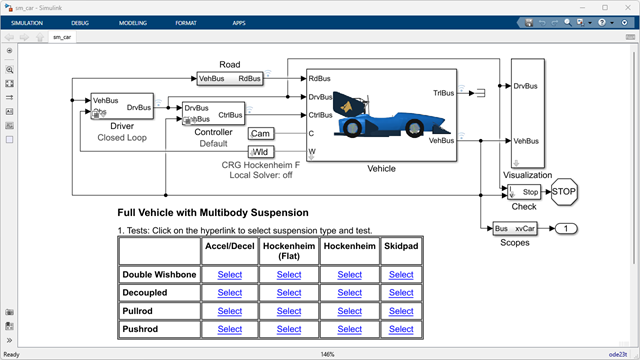

Simscape™ Vehicle Templates for Formula Student

Simscape™ Vehicle Templates are designed to help engineers model and simulate vehicles using Simscape products. This specialized subset of the templates includes targeted examples to help Formula Student teams get started. The templates include a fully parameterized vehicle model that you can configure, including different suspension types. You can also select from different events.
The full version of the Simscape Vehicle Templates with all variants can be accessed here: https://www.mathworks.com/solutions/physical-modeling/simscape-vehicle-templates.html. Because this set of files was extracted from this repository, you may come across unresolved library links for content that was not included. See the full version for all content.
Contents
Events
Supported events include Accel/Decel, Hockenheim (Flat), Hockenheim (Flat), and Skidpad. Change the event by clicking on the hyperlinks on the top level of the model. Examine the code behind the hyperlinks to see the necessary MATLAB commands to change the maneuver.
Suspension Types
Included suspension types are Double Wishbone, Decoupled, and Pushrod. You can change between them by clicking on the hyperlinks on the top level of the model. The data in the workspace selects which variants are active based on data within the Vehicle data structure.
Note that the hyperlinks execute two commands, one to load the default vehicle parameters and the other to configure the event. After loading vehicle parameters, you need to select the event again so that the tire models know which surface they are driving on.
You can explore the suspensions with these testrig models
- Open model: Quarter car, Double Wishbone
- Open model: Quarter car, Pullrod
Vehicle Parameterization
Vehicle parameters are defined in MATLAB Scripts
- Double Wishbone: Vehicle_data_dwishbone.m
- Decoupled: Vehicle_data_decoupled.m
- Pullrod: Vehicle_data_dwpullrod.m
Each of these defines a structure "Vehicle" in the MATLAB workspace. You can modify parameter values in the workspace or in the file. There are cases where some parameters depend on other parameters. Take care when adjusting parameters in the tire, shocks, and track rod.
- The tire has parameters that define which surface it is on. . The code in sm_car_config_maneuver.m will ensure they are set properly.
- Some parameter values must be identical in two places within the Vehicle data structure. A function call at the bottom of the each vehicle data script will ensure the values are consistent. For more details see functions for ensuring parameter consistency decoupled suspension and double wishbone.
Suspension link inboard connections can be set to kinematic or compliant with bushings.
Control Algorithms
A very simple torque vectoring algorithm is included. You can enable it using the drop down menu on the Controller mask dialog. Take a look at it and customize it with your own algorithm.